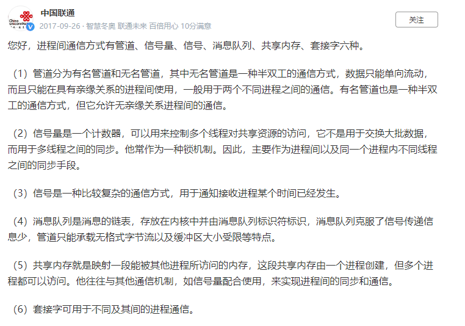
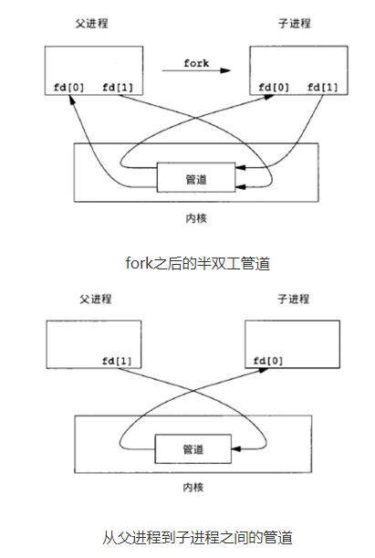
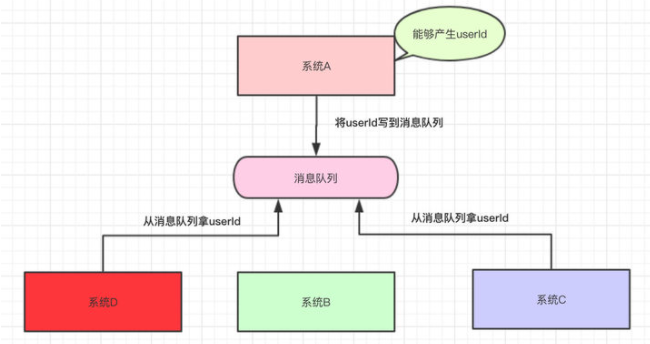
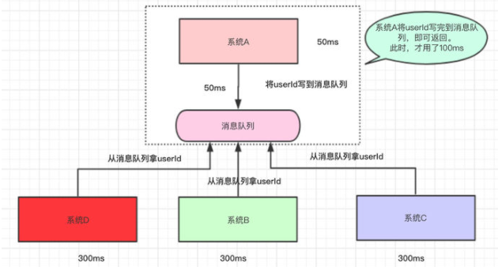
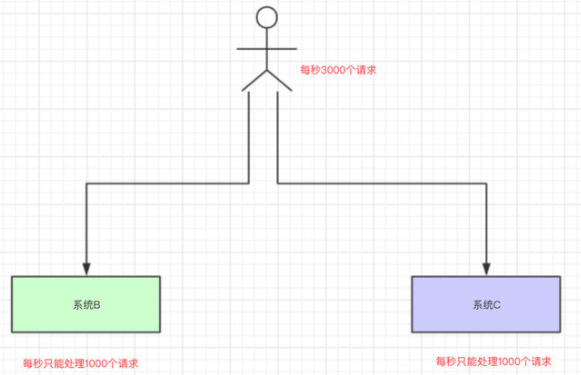
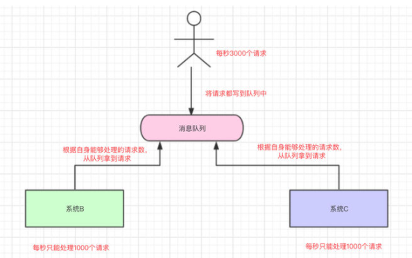
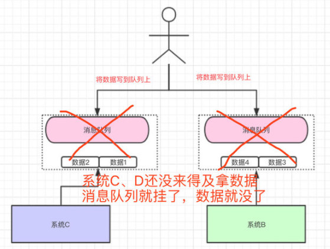

进程间通信方式
进程间通信（IPC，Interprocess communication）是一组编程接口，让程序员能够协调不同的进程，使之
能在一个操作系统里同时运行，并相互传递、交换信息。这使得一个程序能够在同一时间里处理许多用户的要
求。因为即使只有一个用户发出要求，也可能导致一个操作系统中多个进程的运行，进程之间必须互相通话。IPC
接口就提供了这种可能性。每个IPC方法均有它自己的优点和局限性，一般，对于单个程序而言使用所有的IPC方
法是不常见的。
进程间的通信方式
1、无名管道通信
无名管道（ pipe ）：管道是一种半双工的通信方式，数据只能单向流动，而且只能在具有亲缘关系的进程
间使用。进程的亲缘关系通常是指父子进程关系。
2、高级管道通信
高级管道（popen）：将另一个程序当做一个新的进程在当前程序进程中启动，则它算是当前程序的子进
程，这种方式我们成为高级管道方式。
3、有名管道通信
有名管道 （named pipe） ： 有名管道也是半双工的通信方式，但是它允许无亲缘关系进程间的通信。
4、消息队列通信
消息队列（ message queue ） ： 消息队列是由消息的链表，存放在内核中并由消息队列标识符标识。消
息队列克服了信号传递信息少、管道只能承载无格式字节流以及缓冲区大小受限等缺点。
5、信号量通信
信号量（ semophore ） ： 信号量是一个计数器，可以用来控制多个进程对共享资源的访问。它常作为一
种锁机制，防止某进程正在访问共享资源时，其他进程也访问该资源。因此，主要作为进程间以及同一进程内不
同线程之间的同步手段。
6、信号
信号 （ sinal ）：信号是一种比较复杂的通信方式，用于通知接收进程某个事件已经发生。
7、共享内存通信
共享内存（ shared memory ） ：共享内存就是映射一段能被其他进程所访问的内存，这段共享内存由一
个进程创建，但多个进程都可以访问。共享内存是最快的 IPC 方式，它是针对其他进程间通信方式运行效率低而
专门设计的。它往往与其他通信机制，如信号两，配合使用，来实现进程间的同步和通信。
8、套接字通信
套接字（ socket ） ： 套接口也是一种进程间通信机制，与其他通信机制不同的是，它可用于不同机器间的
进程通信。
进程间的通信方式有哪些？各自的优缺点

进程间的五种通信方式
https://network.51cto.com/art/201911/606827.htm?mobile
一 管道
特点：
- 半双工(数据流向仅有一个方向)，具有固定的读端和写端
- 只能用于父进程或兄弟线程之间通信(具有血缘关系的线程之间)
- 一种特殊文件，可以用普通的read、write函数进行读写，但又不是普通文件，不属于任何其它文件系统，仅存在于内存之中
例子：

当一个管道建立时，它会创建两个文件描述符：fd[0]为读而打开，fd[1]为写而打开。要关闭管道只需要关闭这两个文件描述符即可。
#include<stdio.h>
#include<unistd.h>
int main()
{
int fd[2]; // 两个文件描述符
pid_t pid;
char buff[20];
if(pipe(fd) < 0) // 创建管道
printf("Create Pipe Error!\n");
if((pid = fork()) < 0) // 创建子进程
printf("Fork Error!\n");
else if(pid > 0) // 父进程
{
close(fd[0]); // 关闭读端
write(fd[1], "hello world\n", 12);
}
else
{
close(fd[1]); // 关闭写端
read(fd[0], buff, 20);
printf("%s", buff);
}
return 0;
}
二 命名管道
特点：
- 与无名管道不同，命名管道可以在无关进程间通信
- FIFO以一种特殊设备文件形式存在于文件系统中，有路径名与之关联
三 消息队列
特点：
-
消息队列是面向记录的，其中的消息具有特定的格式以及特定的优先级
-
消息队列独立于发送与接收进程。进程终止时，消息队列及其内容并不会被删除
-
消息队列可以实现消息的随机查询, 消息不一定要以先进先出的次序读取,也可以按消息的类型读取
消息队列简单理解为：把要存放的数据放在队列里

把数据放在消息队列里的是生产者
从消息队列里边取数据的是消费者
为什么要用消息队列？
1、解耦

系统A将userId写到消息队列中，系统C和系统D从消息队列中拿数据。这样有什么好处？
- 系统A只负责把数据写到队列中，谁想要或不想要这个数据(消息)，系统A一点都不关心。
- 即便现在系统D不想要userId这个数据了，系统B又突然想要userId这个数据了，都跟系统A无关，系统A一点代码都不用改。
- 系统D拿userId不再经过系统A，而是从消息队列里边拿。系统D即便挂了或者请求超时，都跟系统A无关，只跟消息队列有关。
这样一来，系统A与系统B、C、D都解耦了。
2、异步

假设系统A运算出userId具体的值需要50ms，调用系统B的接口需要300ms，调用系统C的接口需要300ms，调用系统D的接口需要300ms。那么这次请求就需要50+300+300+300=950ms

系统A执行完了以后，将userId写到消息队列中，然后就直接返回了(至于其他的操作，则异步处理)。
- 本来整个请求需要用950ms(同步)
- 现在将调用其他系统接口异步化，只需要100ms(异步)
3、削峰/限流
假如现在我们每个月要搞一个大促，大促期间并发可能很高，比如每秒3000个请求，假设有两个机器处理请求，每台机器每秒只能处理1000个请求。

系统崩掉。

系统B和系统C根据自己的能够处理的请求数去消息队列中拿数据，这样即便有每秒有8000个请求，那只是把请求放在消息队列中，去拿消息队列的消息由系统自己去控制，这样就不会把整个系统给搞崩。
使用消息队列会有什么问题？
1、高可用
无论是我们使用消息队列来做解耦、异步还是削峰，消息队列肯定不能是单机的。试着想一下，如果是单机的消息队列，万一这台机器挂了，那我们整个系统几乎就是不可用了。

所以，当我们项目中使用消息队列，都是得集群/分布式的。要做集群/分布式就必然希望该消息队列能够提供现成的支持，而不是自己写代码手动去实现。
2、数据丢失问题
我们将数据写到消息队列上，系统B和C还没来得及取消息队列的数据，就挂掉了。如果没有做任何的措施，我们的数据就丢了。

学过Redis的都知道，Redis可以将数据持久化磁盘上，万一Redis挂了，还能从磁盘从将数据恢复过来。同样地，消息队列中的数据也需要存在别的地方，这样才尽可能减少数据的丢失。
那存在哪呢？
- 磁盘？
- 数据库？
- Redis？
- 分布式文件系统？
同步存储还是异步存储？
Reference
https://www.zhihu.com/question/54152397/answer/657234090
四 信号量
信号量(semaphore)与已经介绍过的 IPC 结构不同，它是一个计数器。信号量用于实现进程间的互斥与同步，而
不是用于存储进程间通信数据。
特点：
- 信号量用于进程间同步，若要在进程间传递数据需要结合共享内存
- 信号量基于操作系统的 PV 操作，程序对信号量的操作都是原子操作
- 每次对信号量的 PV 操作不仅限于对信号量值加 1 或减 1，而且可以加减任意正整数
- 支持信号量组
五 共享内存
特点
- 共享内存是最快的一种 IPC，因为进程是直接对内存进行存取
- 因为多个进程可以同时操作，所以需要进行同步
- 信号量+共享内存通常结合在一起使用，信号量用来同步对共享内存的访问